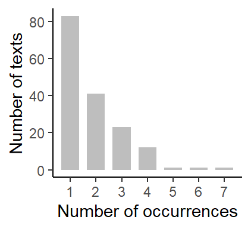
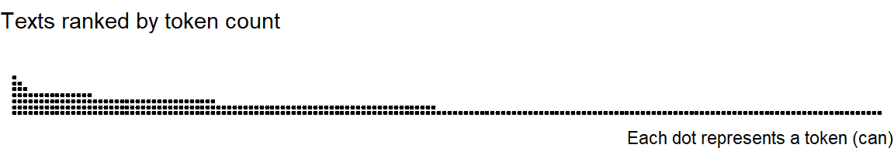

![]()
R setup
library(tidyverse)
d <- read_tsv("./data/modals_data.tsv")
#d <- read_tsv("./posts/2023-11-17_downsampling_implementation/data/modals_data.tsv")I recently consulted colleagues on how to down-sample their corpus data. Their study deals with modal auxiliaries in learner writing, and they are also interested in the semantics of modal verbs. This means that they have to manually annotate individual tokens of modals. In this blog post, I describe how we implemented structured down-sampling (Sönning and Krug 2022) in R. The data we use for illustration is a simplified subset of the originial list of corpus hits. We will concentrate on the modal verb can.
library(tidyverse)
d <- read_tsv("./data/modals_data.tsv")
#d <- read_tsv("./posts/2023-11-17_downsampling_implementation/data/modals_data.tsv")The data include 300 tokens, which are grouped by Text (i.e. learner essay), and there are 162 texts where can occurs at least once. The distribution of tokens across texts is summarized in Figure 1: In most texts (n = 83), can occurs only once, 41 texts feature two occurrences, and so on.
d |>
group_by(text_id) |>
tally() |>
group_by(n) |>
tally() |>
ggplot(aes(x=n, y=nn)) +
geom_col(width = .7, fill="grey") +
theme_classic() +
scale_x_continuous(breaks = 1:7) +
xlab("Number of occurrences") +
ylab("Number of texts")
A different arrangement of the data is shown in Figure 2, where texts are lined up from left to right. Each text is represented by a pile of dots, with each dot representing a can token. The text with the highest number of can tokens (n = 7) appears at the far left, and about half of the texts only have a single occurrence of can – these text are sitting in the right half of the graph.
d |>
group_by(text_id) |>
mutate(n_tokens = n()) |>
ungroup() |>
ggplot(aes(x=reorder(text_id, -n_tokens))) +
geom_dotplot(dotsize = .13, stackratio=1.6) +
theme_void() +
labs(subtitle="Texts ranked by token count",
caption = "Each dot represents a token (can)")
As argued in Sönning and Krug (2022), structured down-sampling would be our preferred way of drawing a sub-sample from these data. In contrast to simple down-sampling (or thinning), where each token has the same probability of being selected, structured down-sampling aims for a balanced representation of texts in the sub-sample. Thus, we would aim for breadth of representation and only start selecting additional tokens from the same text if all texts are represented in our sub-sample. The statistical background for this strategy is discussed in Sönning and Krug (2022).
Looking at Figure 2, this means that our selection of tokens would first consider the “bottom row” of dots in the graph, and then work upwards if necessary, i.e. sample one additional token (at random) from each text that contains two or more occurrences, and so on. It should be noted that, at some point, little more is learned by sampling yet further tokens from a specific text (see discussion in Sönning and Krug 2022, 147).
Our first step is to add to the table a column that preserves the original order. This is important in case we want to return to the original arrangement at a later point. We will name the new column original_order.
d$original_order <- 1:nrow(d)There may be settings where, due to resource constraints, we cannot pick a token from every single text. Or, similarly, where we cannot pick a second token from each text that contains at least two tokens. In such cases, a sensible default approach is to pick at random. Thus, if we were only able to analyze 100 tokens, but there are 162 texts in our data, we would like to pick texts at random. We therefore add another column where the sequence from 1 to N (the number of rows, i.e. tokens) is shuffled. This column will be called random_order. Further below, we will see how this helps us out.
d$random_order <- sample(
1:nrow(d),
nrow(d),
replace=F)The next step is to add a column to the table which specifies the order in which tokens should be selected from a text. We will call the column ds_order (short for ‘down sampling order’). In texts with a single token, the token will receive the value 1, reflecting its priority in the down-sampling plan. For a text with two tokens, the numbers 1 and 2 are randomly assigned to the two tokens. For texts with three tokens, the numbers 1, 2 and 3 are shuffled, and so on. If we then sort the whole table according to the column ds_order, those tokens that are to be preferred, based on the rationale underlying structured down-sampling, appear at the top of the table.
Our first step is to order the table by text_id, to make sure rows are grouped by Text.
d <- d[order(d$text_id),]We then create a list of the texts in the data and sort it, so that it matches the way in which the table rows have just been ordered.
text_list <- unique(d$text_id)
text_list <- sort(text_list)We now create the vector ds_order, which we will add to the table once it’s ready:
ds_order <- NAThe following loop fills in the vector ds_order, text by text. It includes the following steps (marked in the script):
text_list.n_tokens.n_tokens and store it as shuffled.shuffled to the vector ds_order.for(i in 1:length(text_list)){ # (1)
n_tokens <- sum( # (2)
d$text_id == text_list[i]) #
shuffled <- sample( # (3)
1:n_tokens, #
size = n_tokens, #
replace = FALSE) #
ds_order <- append( # (4)
ds_order, #
shuffled) #
}If we look at the contents of ds_order, we note that it still has a leading NA:
ds_order [1] NA 2 1 3 1 2 1 1 2 2 1 2 3 1 4 1 3 2 1 2 1 1 2 1 1
[26] 1 1 1 3 4 1 2 1 1 2 3 1 1 2 3 1 1 2 1 1 1 1 2 1 4
[51] 3 3 1 2 1 2 2 1 2 3 1 1 5 6 3 4 2 2 4 3 1 2 1 1 2
[76] 4 3 1 2 1 2 1 4 3 1 1 1 1 2 1 1 1 1 3 2 1 1 2 2 4
[101] 1 3 1 1 1 2 1 1 1 1 1 2 3 1 1 1 2 1 1 1 1 3 2 1 1
[126] 1 2 2 3 1 1 1 2 1 3 2 1 1 1 1 1 1 1 1 1 1 1 1 1 1
[151] 1 3 2 1 2 1 1 1 2 1 1 2 3 1 1 1 2 1 1 2 1 1 1 2 1
[176] 1 2 3 1 2 2 3 1 2 1 3 1 3 2 1 2 1 2 1 2 1 4 3 1 3
[201] 2 1 2 1 3 1 1 2 2 1 1 3 2 1 1 1 1 2 2 1 1 1 1 2 2
[226] 3 1 1 1 2 3 1 2 1 1 1 2 1 1 1 1 2 1 3 4 2 1 1 3 2
[251] 4 3 2 1 1 2 1 2 1 1 3 5 2 4 1 1 2 1 1 2 1 2 1 1 2
[276] 7 6 5 3 2 1 4 1 1 1 2 1 1 1 1 2 4 2 1 3 1 4 3 2 2
[301] 1So we get rid of it:
ds_order <- ds_order[-1]We can now add ds_order as a new column to our table:
d$ds_order <- ds_orderThe final step is to order the rows of the table in a way that reflects our down-sampling priorities. We therefore primarily order the table based on ds_order. In addition, we order by the column random_order, which we created above. All tokens with the same priority level (e.g. all tokens with the value “1” in the column ds_order) will then be shuffled, ensuring that the order of tokens is random.
d <- d[order(d$ds_order,
d$random_order),]We can now look at the result:
head(d)# A tibble: 6 x 7
text_id left_context modal right_context original_order random_order ds_order
<chr> <chr> <chr> <chr> <int> <int> <int>
1 text_19 music can just 109 1 1
2 text_158 you can only 289 3 1
3 text_123 and cann~ distinguish 148 4 1
4 text_69 How can this 48 5 1
5 text_88 music can also 25 9 1
6 text_156 One can not 167 13 1Note that the strategy we have used, i.e. adding a column reflecting the priority of tokens for down-sampling, allows us to approach down-sampling in a flexible and adaptive way: Rather than actually selecting (or sampling) tokens (or rows) from the original data, we may now simply start analyzing from the top of the table. This way we remain flexibility when it comes to the choice of how many tokens to analyze.
@online{sönning2023,
author = {Sönning, Lukas},
title = {Structured down-Sampling: {Implementation} in {R}},
date = {2023-11-18},
url = {https://lsoenning.github.io/posts/2023-11-17_downsampling_implementation/},
langid = {en}
}